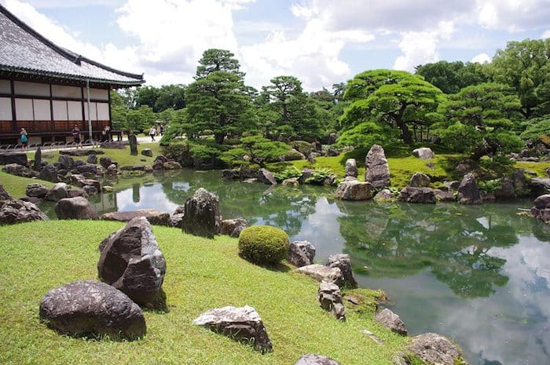
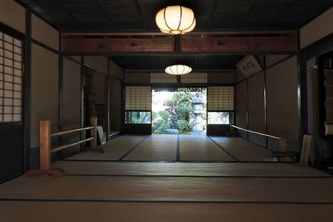
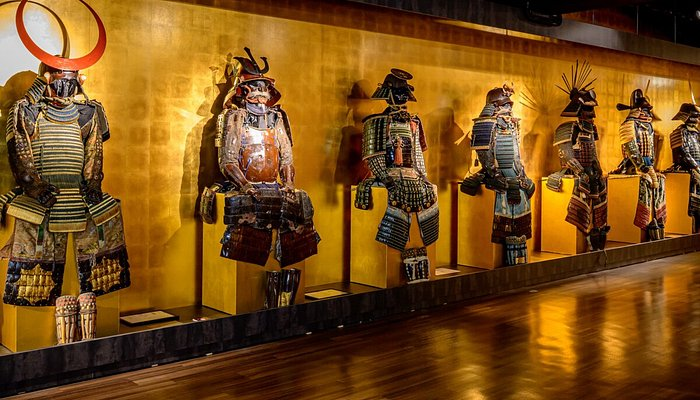
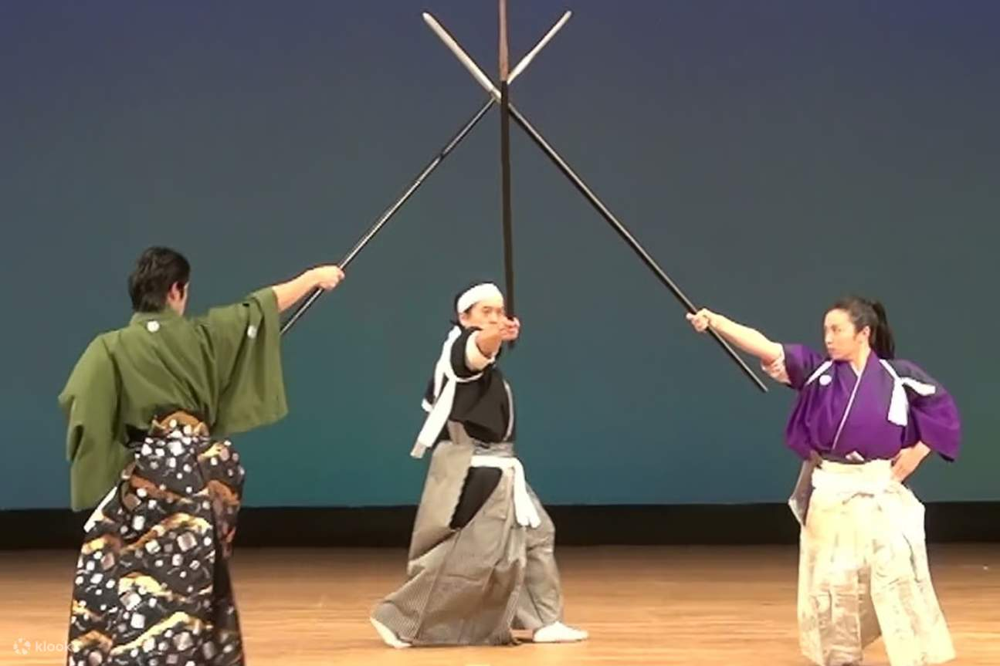

Cosa Vedere: Le 4 tappe inevitabili
Selezionare cosa visitare a Kyoto richiede pragmatismo. Abbiamo isolato quattro luoghi fondamentali per comprendere l'epoca dei samurai, eliminando il superfluo e lasciando spazio solo alla storia reale. Sfilate le schede per analizzare ciascuna tappa.

Castello di Nijo (Nijō-jō)
Il monumento simbolo dove il potere dello Shogun è iniziato ed è finito. Famoso per i suoi "pavimenti dell'usignolo", un ingegnoso sistema d'allarme anti-ninja che cigola a ogni passo. Un'ottima dimostrazione di come la paranoia feudale potesse trasformarsi in alta ingegneria.

Casa Yagi e Tempio Mibu-dera
Il primo quartier generale degli Shinsengumi, la spietata milizia speciale dell'Ottocento. Dimenticate le ricostruzioni moderne: sulle travi in legno del soffitto sono tuttora visibili i solchi lasciati dalle katane durante le faide interne del gruppo.

Kyoto Samurai & Ninja Museum
Struttura dedicata alla cultura materiale dei guerrieri. Oltre alla collezione di armature e armi originali del periodo Edo, permette di comprendere da vicino il peso e la complessità degli equipaggiamenti militari dell'epoca.

Samurai Kembu Theater
Spettacolo incentrato sull'antica "danza della spada", usata dai guerrieri per affilare la concentrazione prima della battaglia. Un'esibizione che sintetizza perfettamente il dualismo tra rigore marziale e senso estetico.